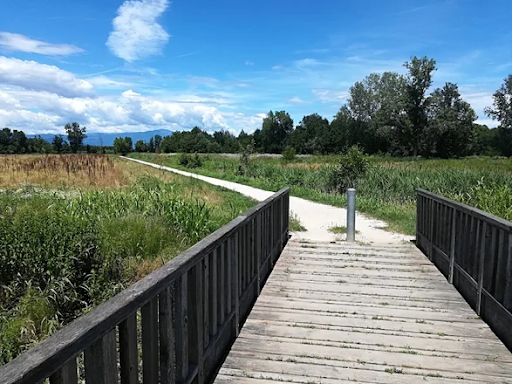

I “Fionchi di Lovari”: con questa denominazione si definisce un’area di valenza ambientale, all’interno della quale si snoda un percorso pedonale fruibile tutto l’anno. Il luogo è importante per l’aspetto idrogeologico (la zona era anticamente paludosa, è stata bonificata in varie epoche, dal periodo medioevale fino alla metà del 1900) nonché faunistico. Ogni anno qui riparano numerose specie animali, che trovano ai Fionchi l’oasi adatta al loro passaggio. Nondimeno si tratta di un luogo di grande valore paesaggistico e storico. Si trovano varie zone visibili: di risorgiva con i fontanassi, di canalizzazione e di affioramenti (appunti i fionchi). La vegetazione è composta da varie specie arboree e arbusti, per esempio: aceri, farnie, carpini, frassini, salici, ligustri e noccioli. Attraverso questo paesaggio che mantiene ancora l’immagine della campagna padovana, è possibile passeggiare o percorrere in bici i tracciati che vi si snodano in ogni stagione.
